Base vs VideoReward — frame strips (0 / 40 / 80 / 120)
Each composite: top row = Base, bottom row = VideoReward. Four frames are sampled at
equal time points (start / ⅓ / ⅔ / end). For the 24-fps clips (LTX-Video, HunyuanVideo) these are frames
0 / 40 / 80 / 120; the 8-fps CogVideoX clips have 41 frames, so the same time points map to frames 0 / 13 / 27 / 40.
The exact frame index is printed above each column.
CogVideoX · 14 prompts
CogVideoX · dyn_008
A rider pedals a bicycle forward through a flat snowy field. Over five seconds, the right foot pushes the pedal downward and back while the left foot pulls upward in a continuous circular rhythm. Both hands grip the handlebars firmly, fingers wrapped around the grips, keeping the wrists straight and elbows slightly bent. The torso leans forward at a consistent angle, shifting weight slightly left and right with each pedal stroke. The head remains level, gaze fixed straight ahead. The bicycle frame stays upright, and the rear wheel rotates continuously, displacing a thin layer of snow that trails behind the tire. The camera tracks parallel to the bicycle at a steady pace.
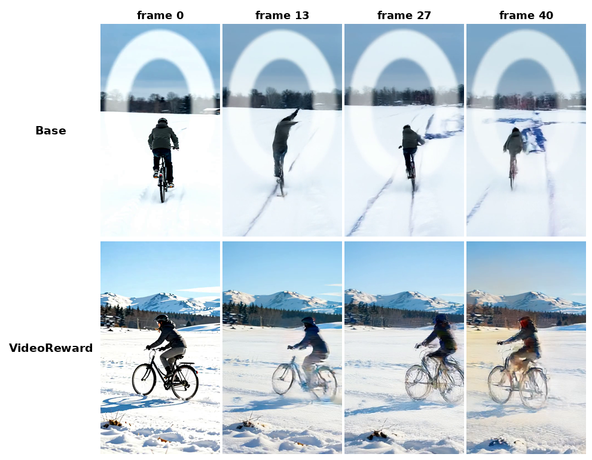
CogVideoX · dyn_014
The car begins stationary on a flat paved surface. The rear wheels start rotating forward, increasing rotational speed over the first two seconds. The rear suspension compresses slightly and the chassis tilts backward. The tires grip the road, propelling the vehicle forward in a straight line. The front wheels roll smoothly while the rear wheels continue spinning rapidly. The car advances approximately two car lengths, reaching a higher steady speed by the end. The camera pans steadily to the right, tracking the vehicle’s forward motion.
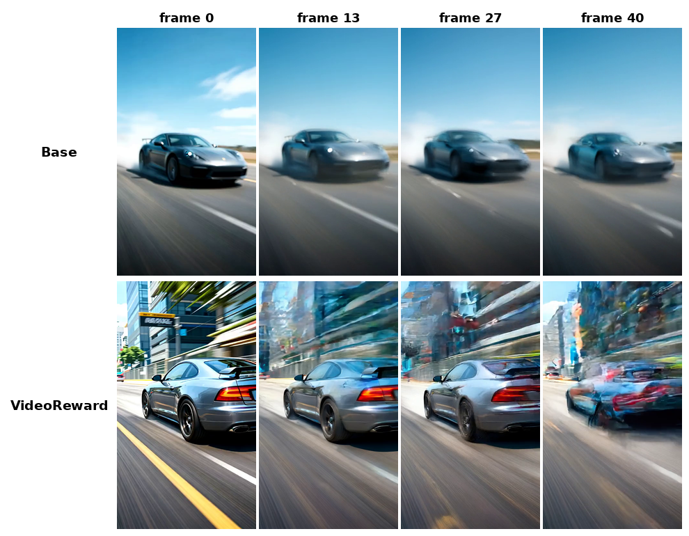
CogVideoX · dyn_016
A rider on a motorcycle approaches a left-hand curve, gripping the handlebars with both hands. The rider shifts weight to the left, leaning the motorcycle into the turn while steering the front wheel right. The bike holds a steady lean angle for two seconds as it tracks the bend. The rider then gradually shifts weight back to center, straightening the handlebars and lifting the motorcycle upright over the remaining two seconds. The camera pans slightly right to follow the bike's exit.
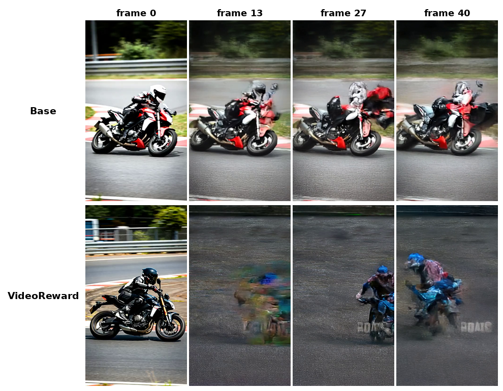
CogVideoX · dyn_018
The rider grips the handlebars with both hands, keeping the elbows slightly bent as the motorcycle moves forward across the flat snowy terrain. The front wheel rotates continuously while the rear tire compresses the snow, pushing a steady trail behind. The rider shifts their torso weight slightly to the right, turns the handlebars once to steer around a small snow bump, then straightens the arms and returns the grip to center. The rider’s head turns briefly to check the path ahead before looking forward again, maintaining a steady posture as the motorcycle continues its forward motion. The camera tracks parallel from the left side to keep the subject centered.
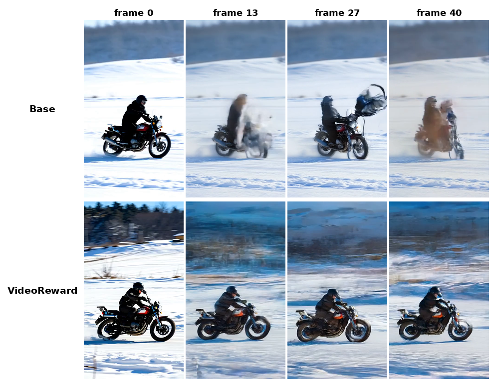
CogVideoX · dyn_020
The airplane flies forward at a steady altitude, tilting its right wing downward and left wing upward to execute a gentle left bank. It holds the banked position for two seconds while the ailerons make minor adjustments, then levels the wings and continues straight ahead. The camera tracks steadily from a low angle, keeping the aircraft centered throughout the maneuver.
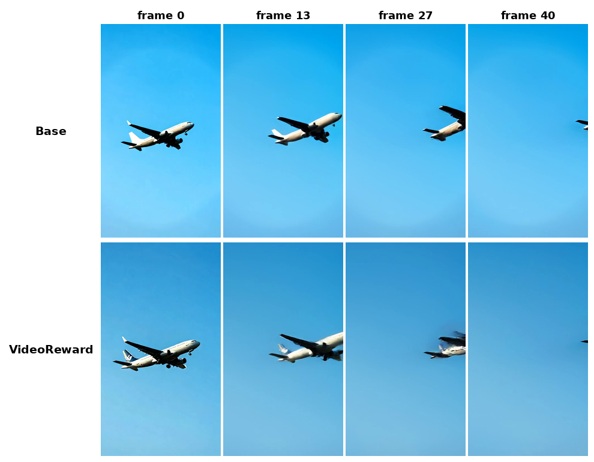
CogVideoX · dyn_029
The train’s large driving wheels begin rotating along the steel rails at a moderate pace. Over the first two seconds, the wheel rotation increases in frequency, pushing the locomotive’s chassis forward past three evenly spaced track joints. From seconds two to four, the wheels spin faster, displacing a thin layer of gravel dust while the front carriage advances continuously. In the final second, the train sustains a higher forward velocity, the wheels rotating rapidly and the background scenery shifting past at an increased rate. The camera remains fixed at track level, keeping the lower chassis and driving wheels centered as the forward motion progresses.
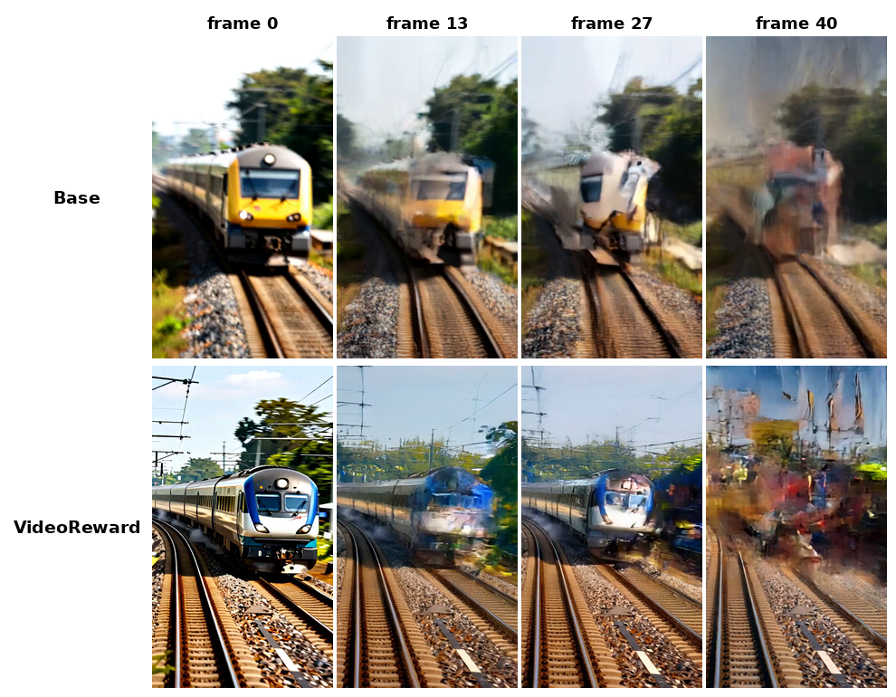
CogVideoX · dyn_033
The truck travels forward along a straight road surface, then gradually decelerates as the wheels rotate more slowly. The chassis settles downward slightly while the vehicle continues braking in a straight line, eventually coming to a complete halt with all wheels ceasing rotation. The truck holds the stationary position for the remainder of the shot. The camera remains fixed on the front three-quarter view throughout the sequence.
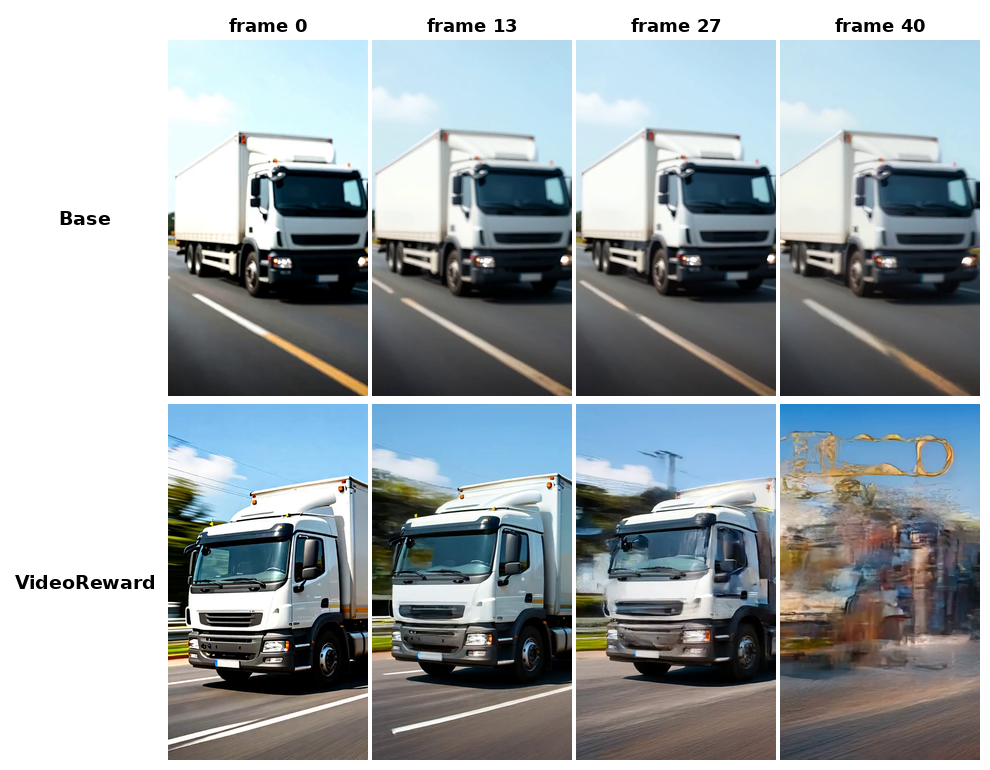
CogVideoX · dyn_036
The boat travels forward across the water, leaving a steady wake behind its hull. Over the first two seconds, the vessel gradually reduces forward momentum as the wake narrows and the bow settles slightly lower into the water. The deceleration continues steadily, with the water around the sides becoming calm and the hull's movement noticeably diminishing. In the final two seconds, the boat slows to a near standstill and comes to a complete halt, floating evenly with only minor drift. A slow, slight forward tracking shot follows the hull until it stops.
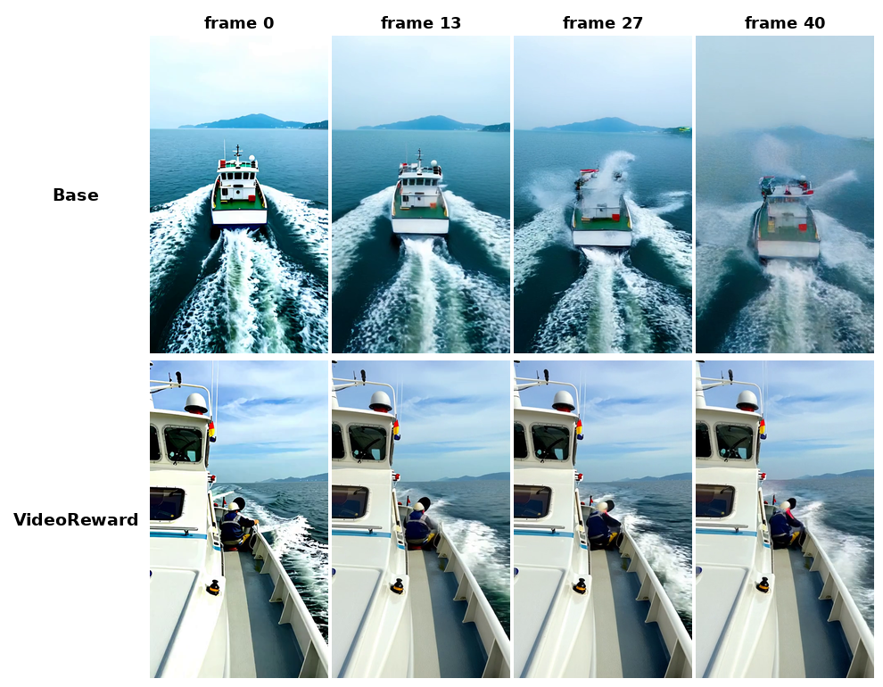
CogVideoX · dyn_048
A dog runs forward, lifting its front paws and hind legs in a steady alternating rhythm while swinging its tail left and right twice per stride. The head stays level, ears flapping slightly backward, and the shoulders move forward and back in sync with the leg motion. After two seconds, the dog tilts its head downward, turns its torso slightly left, and adjusts its stride to continue running forward until the five-second mark. The camera pans slowly to the right to follow the movement.
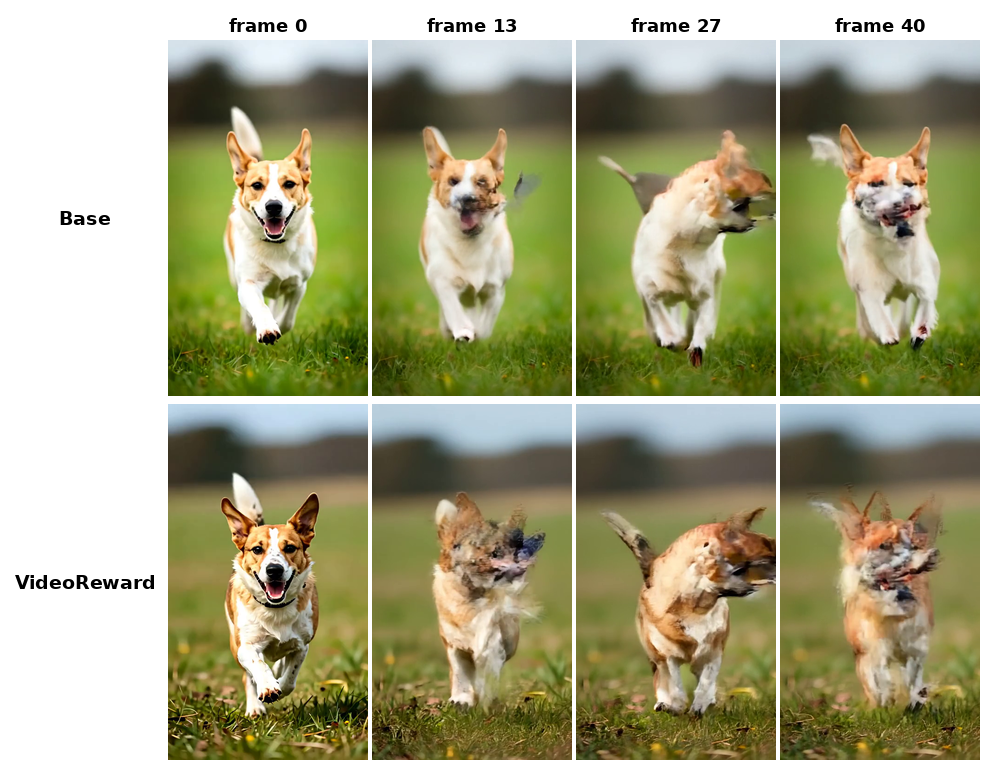
CogVideoX · dyn_049
The horse stands at the riverbank, bends its front knees, and lowers its head and neck downward toward the water surface. Its muzzle touches the water, opens its lips slightly to lap, and holds the drinking position for a moment. The horse then extends its neck upward in a continuous motion, lifts its muzzle clear of the surface, and straightens its front legs to return to a standing posture. The camera remains fixed on the subject throughout the sequence.
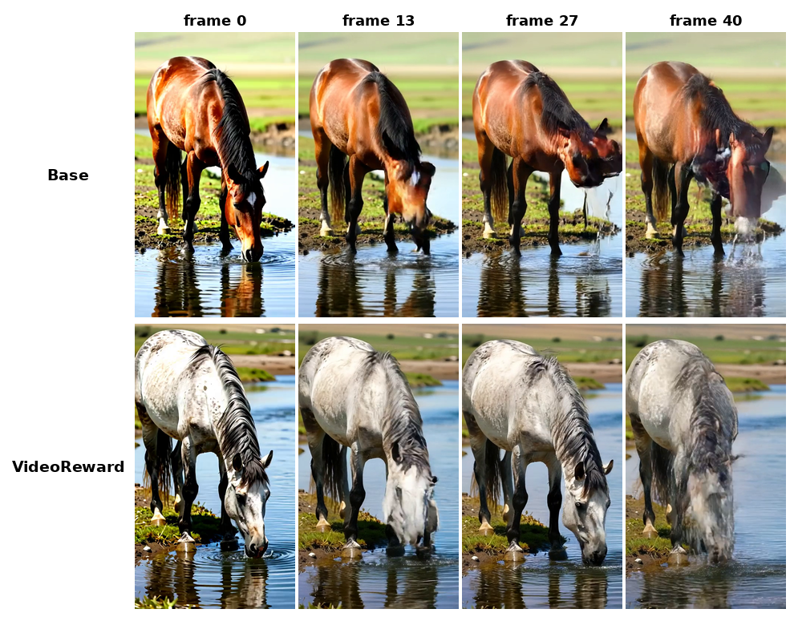
CogVideoX · dyn_052
A horse moves forward at a steady pace across open ground, its front legs extending outward and striking the surface while its hind legs push off in a rhythmic cycle. The horse’s head stays level with a slight forward tilt, and its tail swishes left and right with each stride. As it approaches a stationary group of horses in the midground, the running horse angles its torso slightly to the right, lowers its head by a few inches, and gradually reduces its stride length. It takes two final steps into the edge of the group, brings all four hooves to a firm stop, and aligns its body parallel to the nearest horse. The camera tracks smoothly from a low side angle, maintaining a fixed distance as the horse completes the approach and settles into place.
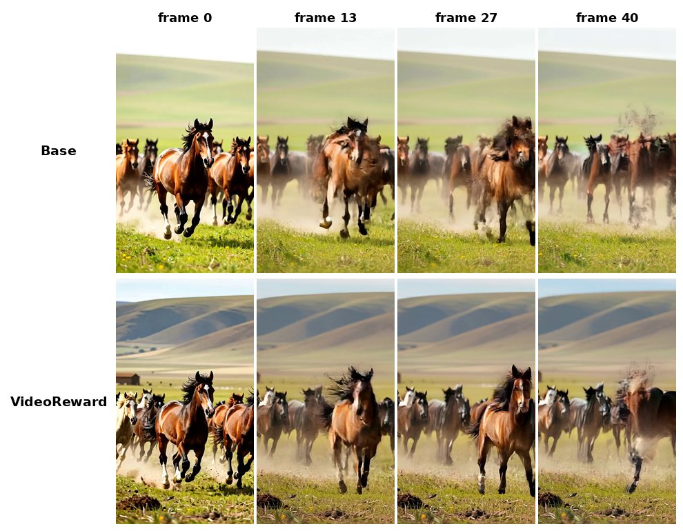
CogVideoX · dyn_053
The sheep stands near the riverbank, then bends its front knees and lowers its torso. Its neck extends downward, tilting the head forward until the snout touches the water surface, creating small ripples. The sheep dips its head and lifts it twice in a steady rhythm, then pauses with the snout just above the water. Finally, the neck straightens, the head rises back to shoulder level, and the front legs extend to return the body to a standing posture.
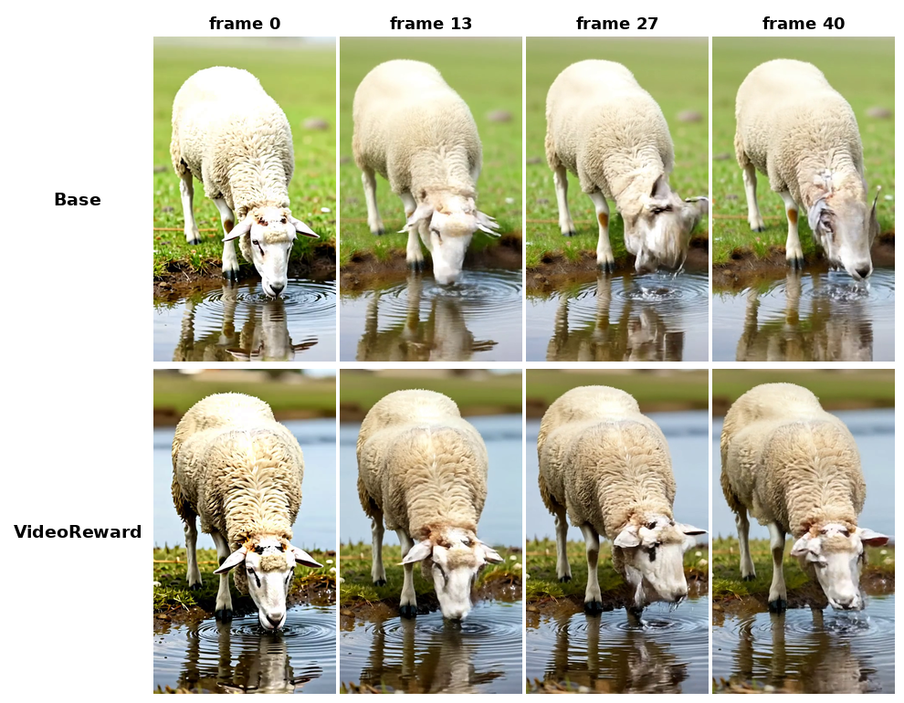
CogVideoX · dyn_063
The bear stands on all fours, lifts its head upward, and tilts its snout to the left while flaring its nostrils twice. It holds the position briefly, then rotates its head to the right and takes three short, rapid inhales through its nose. The bear shifts its weight forward on its front paws, lowers its head slightly, continues to sniff the air with steady nostril movements, and returns to a neutral standing posture. The camera holds a static frame throughout the sequence.
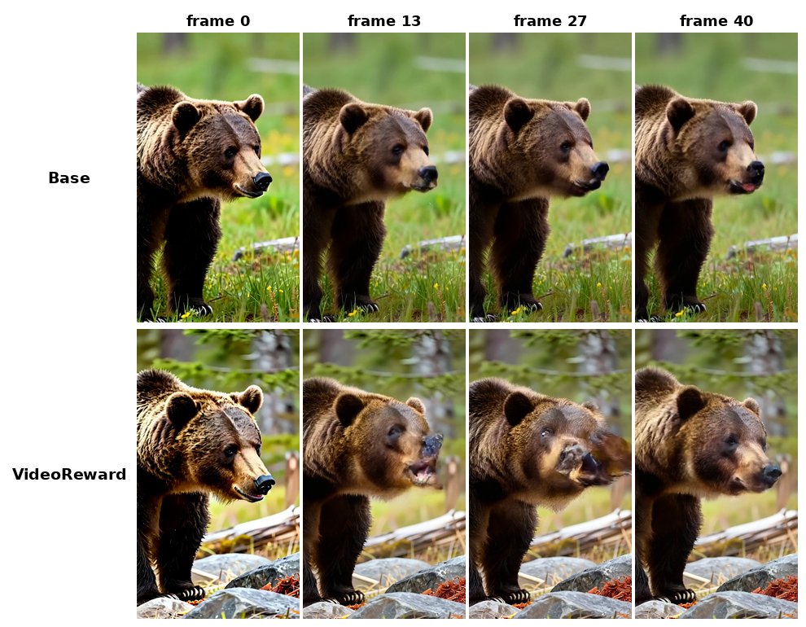
CogVideoX · dyn_071
A giraffe gallops forward across flat terrain, its long legs moving in a steady rhythm. The neck extends forward, swaying slightly with each stride, while the head bobs downward and lifts in sync with the hoof strikes. As it runs, the giraffe turns its head to the right, fixing its gaze on a group of three other giraffes standing in the distance. It maintains a consistent pace, ears flicking forward, and gradually closes the gap. Over the final two seconds, it reduces its stride length, brings its front legs to a firm plant, and straightens its neck into a standing position beside the herd.
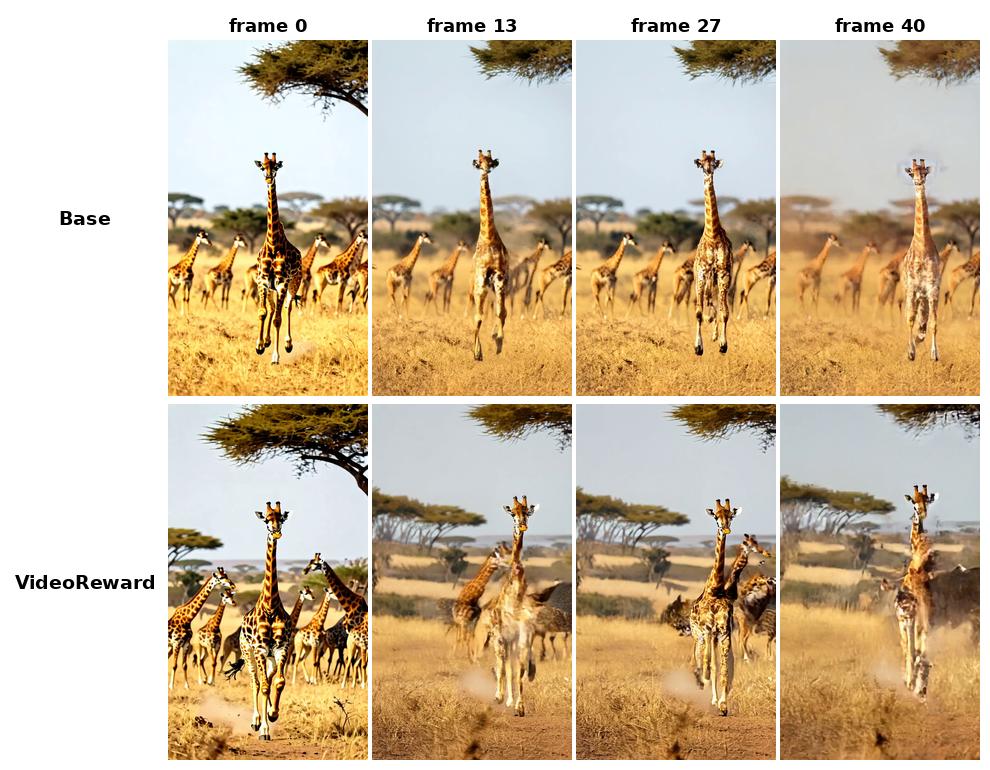
LTX-Video · 18 prompts
LTX-Video · dyn_013
The car travels forward on a straight road, its front and rear wheels rotating at a steady pace. Over the first two seconds, the vehicle gradually reduces forward speed, causing the wheel rotation to visibly slow down. The rear brake lights illuminate on the back bumper, and the chassis settles slightly downward as the suspension compresses. The car continues moving forward at a decreasing rate, then decelerates further until the wheels stop rotating completely. The vehicle remains stationary with the brake lights still lit, aligned straight on the road. The camera maintains a fixed side-rear position throughout the sequence.
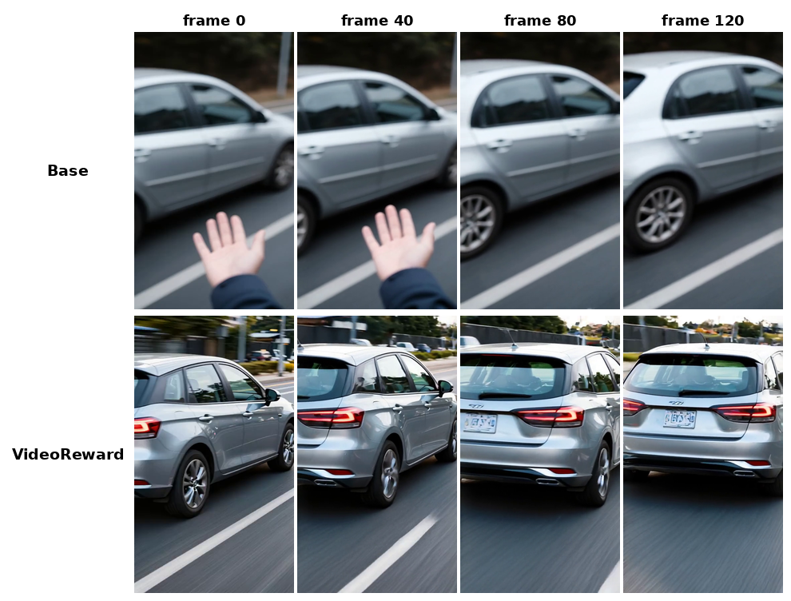
LTX-Video · dyn_014
The car begins stationary on a flat paved surface. The rear wheels start rotating forward, increasing rotational speed over the first two seconds. The rear suspension compresses slightly and the chassis tilts backward. The tires grip the road, propelling the vehicle forward in a straight line. The front wheels roll smoothly while the rear wheels continue spinning rapidly. The car advances approximately two car lengths, reaching a higher steady speed by the end. The camera pans steadily to the right, tracking the vehicle’s forward motion.
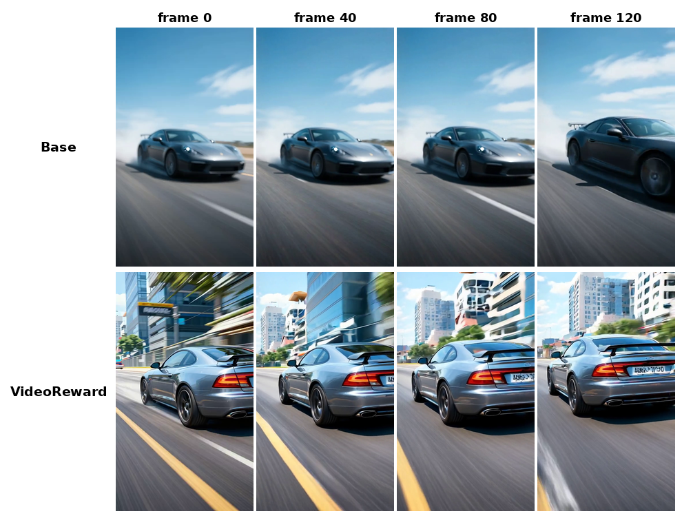
LTX-Video · dyn_019
The motorcycle moves forward along a straight road. The rear wheel spins continuously while the front wheel tracks straight ahead. The rider grips the handlebars with both hands, leans their torso forward over the fuel tank, and shifts their hips left and right three times to stabilize the bike. The motorcycle maintains forward momentum as the background scenery passes by at an increasing rate. The camera tracks alongside at a steady pace, keeping the front half centered.
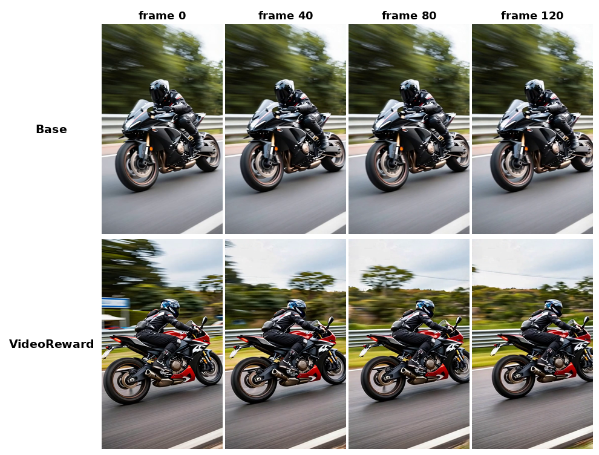
LTX-Video · dyn_024
A city bus approaches a curved intersection and initiates a right turn. The front wheels rotate to the right, steering the vehicle along the bend while the rear section swings slightly outward. The bus maintains a steady low speed as it navigates the corner, its tires following the pavement's curvature. Over the five-second sequence, the steering angle gradually decreases as the chassis straightens, aligning the bus with the new lane. The camera pans smoothly to the right, tracking the vehicle's trajectory until it completes the turn and drives forward.
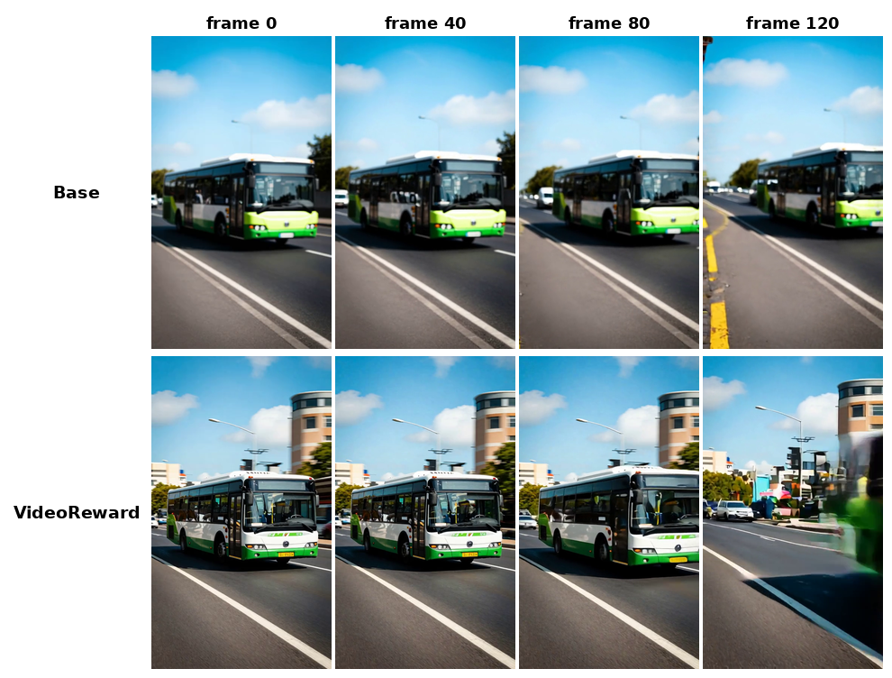
LTX-Video · dyn_027
The train advances forward along a straight set of rails, its driving wheels rotating continuously as it moves from the background toward the foreground. The locomotive maintains a steady forward trajectory, passing the camera position while the lower chassis and wheel assemblies roll smoothly over the track joints. The wheels complete full rotations without pausing as the train travels straight ahead. After passing the camera, the train continues its forward motion, gradually receding into the distance while maintaining consistent speed. A slow horizontal pan tracks the train's path for the first two seconds, then the camera holds steady for the remaining duration.
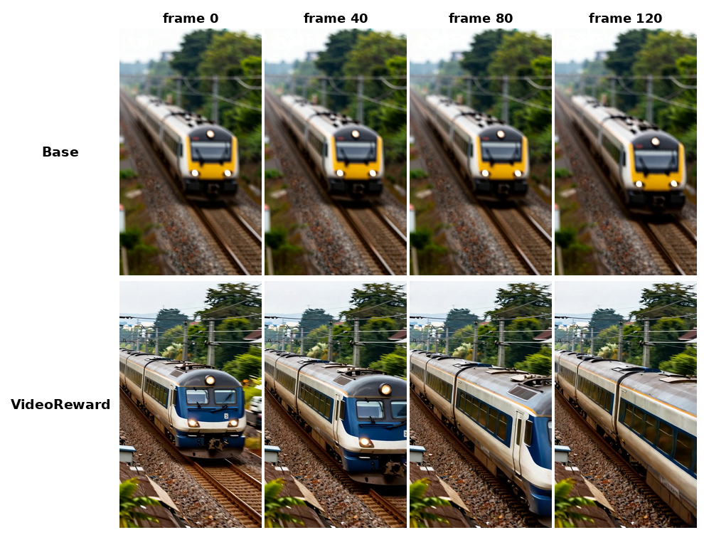
LTX-Video · dyn_029
The train’s large driving wheels begin rotating along the steel rails at a moderate pace. Over the first two seconds, the wheel rotation increases in frequency, pushing the locomotive’s chassis forward past three evenly spaced track joints. From seconds two to four, the wheels spin faster, displacing a thin layer of gravel dust while the front carriage advances continuously. In the final second, the train sustains a higher forward velocity, the wheels rotating rapidly and the background scenery shifting past at an increased rate. The camera remains fixed at track level, keeping the lower chassis and driving wheels centered as the forward motion progresses.
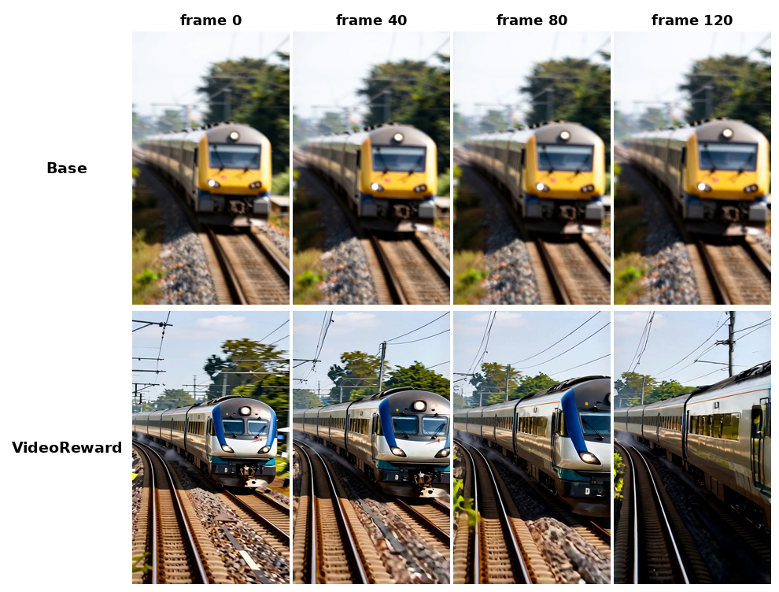
LTX-Video · dyn_032
The truck remains stationary in a dense line of vehicles. The front wheels turn slightly left and right, adjusting position twice. The front bumper dips downward as the suspension compresses, holds briefly, then returns to its original height. The exhaust pipe releases a short puff of vapor that drifts upward and dissipates. The side mirrors remain stationary throughout the sequence.
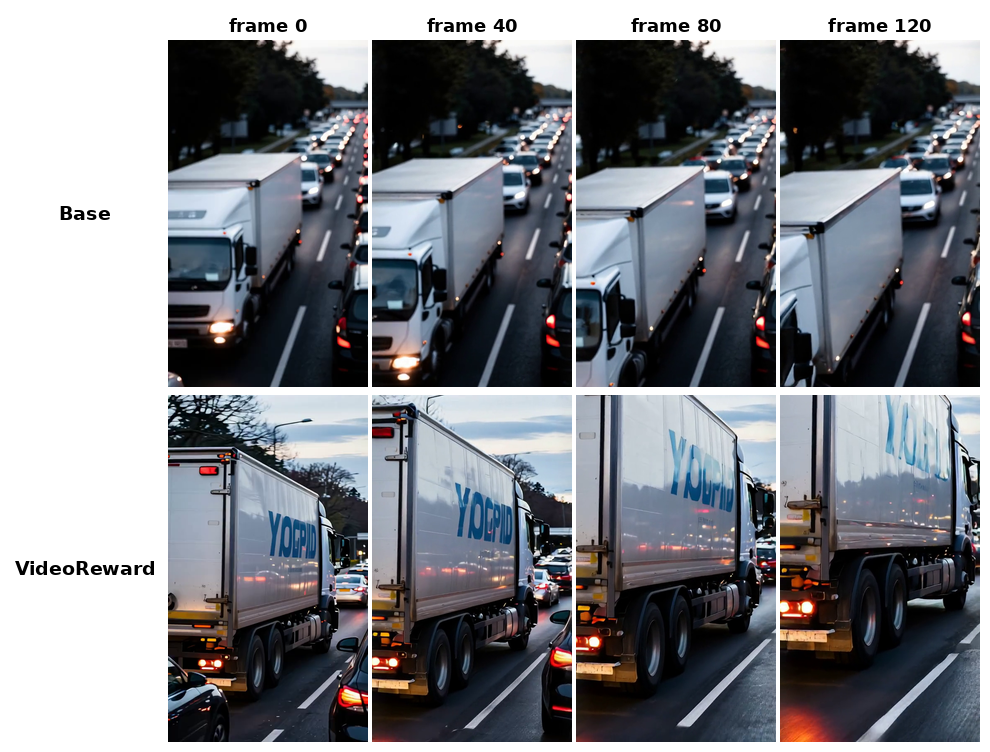
LTX-Video · dyn_033
The truck travels forward along a straight road surface, then gradually decelerates as the wheels rotate more slowly. The chassis settles downward slightly while the vehicle continues braking in a straight line, eventually coming to a complete halt with all wheels ceasing rotation. The truck holds the stationary position for the remainder of the shot. The camera remains fixed on the front three-quarter view throughout the sequence.
LTX-Video · dyn_037
The boat rests on calm water, then the bow lifts upward steadily while the stern dips slightly. White water spray increases along both hull sides as the vessel pushes forward. The wake behind the stern widens outward and extends backward in a continuous line. The boat maintains a straight trajectory across the water surface, leaving a steady trail of churned foam. A static camera holds a side-rear angle to keep the hull and wake fully in frame throughout the sequence.
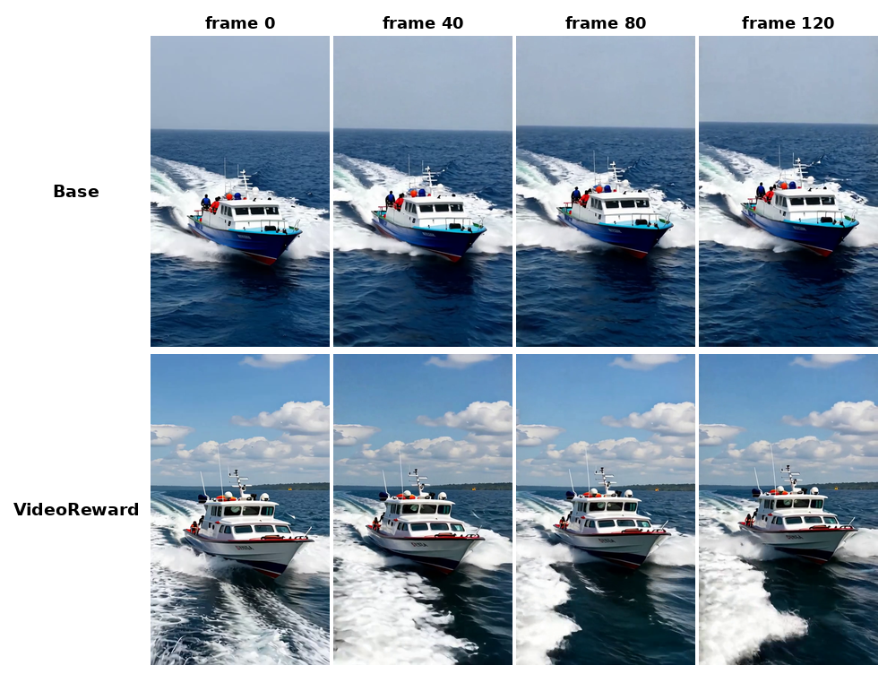
LTX-Video · dyn_038
The bird extends both wings fully and flaps downward twice in a steady rhythm. It then holds the wings level and glides forward through the sky. The bird tilts its head slightly to the left, pauses briefly, and lowers its right wing to bank slowly to the right while continuing its forward flight. The camera pans slightly to the right to follow the bird’s trajectory.
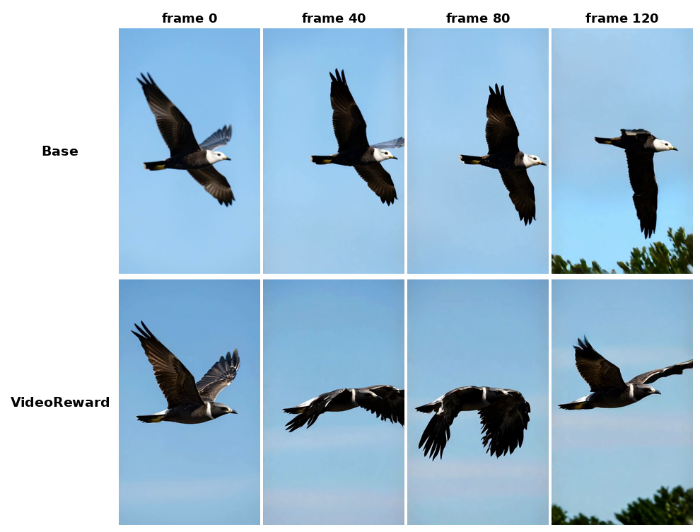
LTX-Video · dyn_039
A bird stands on a tree branch, gripping a dry twig with its beak and lowering its head to place it into a cup-shaped nest woven below. The bird anchors its feet on the branch, presses the twig into the structure with its chest, then releases the material and lifts its head. It turns its head left, grasps a broad leaf, and drags it downward into the nest. The bird shifts its weight to the right, tucks the leaf under existing twigs, and presses its chest against the nest rim twice to weave the materials tighter. The sequence ends with the bird straightening its torso, turning its head forward, and holding a stable posture on the branch.
LTX-Video · dyn_040
A bird flies forward over a snow-covered forest canopy, flapping both wings upward and downward three times in a steady rhythm. It tilts its torso slightly to the left, adjusts its tail feathers to steer, then levels its posture and extends both wings into a continuous glide. The bird maintains a consistent altitude above the tree line, drifting steadily toward the right side of the frame before the shot ends.
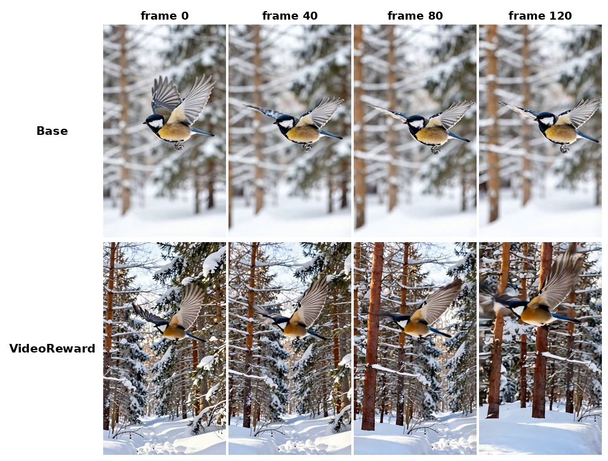
LTX-Video · dyn_043
The cat crouches low over a shallow water bowl with its front paws planted firmly on the ground. It lowers its head forward, extending its neck until its muzzle contacts the water surface. The cat then laps the water three times in a steady rhythm, retracting its head slightly upward after each dip before lowering it again. After the third lap, it lifts its head straight up, shakes its muzzle once to clear droplets, and returns to a resting crouch with its front paws aligned forward. The camera holds a static frame throughout.
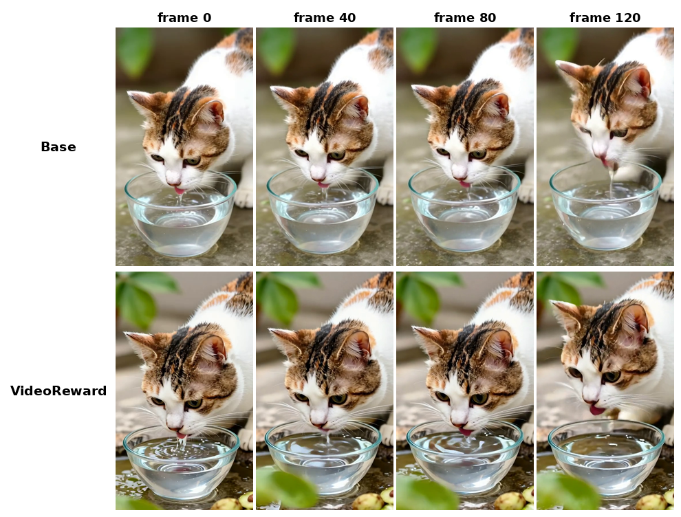
LTX-Video · dyn_048
A dog runs forward, lifting its front paws and hind legs in a steady alternating rhythm while swinging its tail left and right twice per stride. The head stays level, ears flapping slightly backward, and the shoulders move forward and back in sync with the leg motion. After two seconds, the dog tilts its head downward, turns its torso slightly left, and adjusts its stride to continue running forward until the five-second mark. The camera pans slowly to the right to follow the movement.
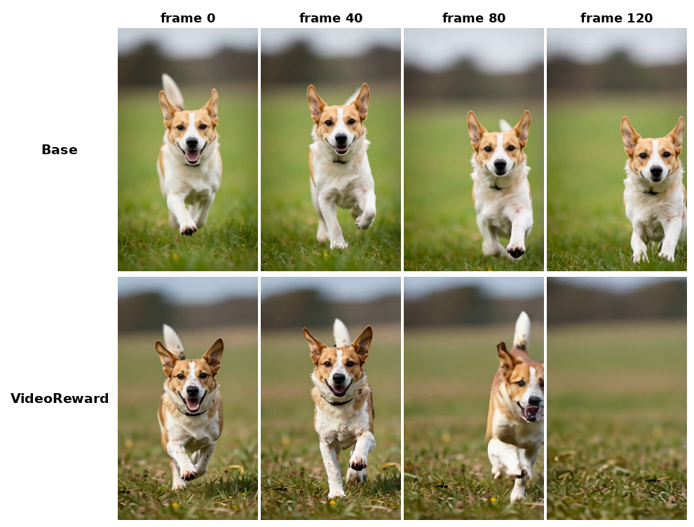
LTX-Video · dyn_061
The elephant runs forward across open ground, its left and right legs alternating in a rapid sequence. With each stride, the trunk swings downward and forward, then lifts back toward the head. The ears flap outward and backward twice per step cycle. The head bobs downward with each foot impact, then returns to a level position. The gaze remains fixed toward a group of other elephants in the distance. As it closes the gap, the front legs extend further forward, and the shoulders lower slightly, maintaining a steady pace until it reaches the edge of the herd. The camera tracks steadily from a low side angle, keeping the elephant centered in the frame.
LTX-Video · dyn_065
The bear crouches low to the ground, lowering its head and moving its nose left and right twice to follow a scent trail. It raises its right foreleg, pauses with the paw suspended, then steps forward twice while keeping its eyes locked ahead. The camera tracks slowly to the right to follow the bear’s forward movement.
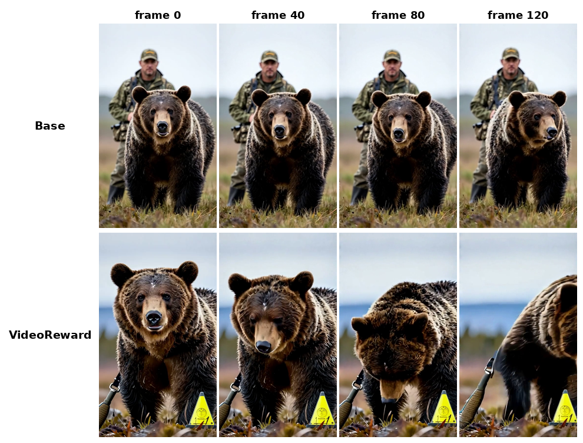
LTX-Video · dyn_067
A zebra runs forward across flat terrain, its front legs extending and pushing off while the hind legs drive backward in a steady gallop rhythm. The head bobs slightly upward and forward with each stride, ears facing ahead, and the tail sways left and right with the momentum. The zebra maintains this pace for three seconds, gradually closing the distance to a small herd visible in the mid-ground. It then shortens its stride, lifts its head higher, steps into the space beside the nearest herd member, and comes to a brief halt with all four hooves planted. The camera tracks steadily from a low side angle to follow the motion.
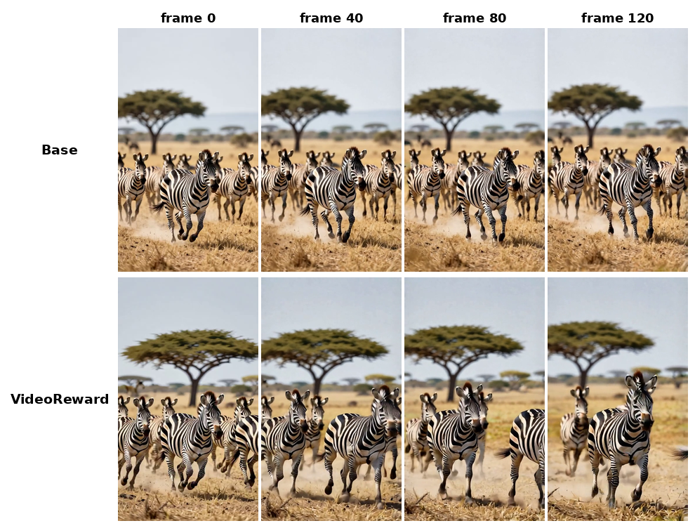
LTX-Video · dyn_071
A giraffe gallops forward across flat terrain, its long legs moving in a steady rhythm. The neck extends forward, swaying slightly with each stride, while the head bobs downward and lifts in sync with the hoof strikes. As it runs, the giraffe turns its head to the right, fixing its gaze on a group of three other giraffes standing in the distance. It maintains a consistent pace, ears flicking forward, and gradually closes the gap. Over the final two seconds, it reduces its stride length, brings its front legs to a firm plant, and straightens its neck into a standing position beside the herd.
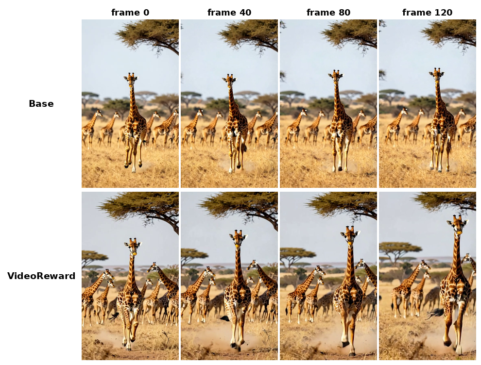
HunyuanVideo · 6 prompts
HunyuanVideo · dyn_008
A rider pedals a bicycle forward through a flat snowy field. Over five seconds, the right foot pushes the pedal downward and back while the left foot pulls upward in a continuous circular rhythm. Both hands grip the handlebars firmly, fingers wrapped around the grips, keeping the wrists straight and elbows slightly bent. The torso leans forward at a consistent angle, shifting weight slightly left and right with each pedal stroke. The head remains level, gaze fixed straight ahead. The bicycle frame stays upright, and the rear wheel rotates continuously, displacing a thin layer of snow that trails behind the tire. The camera tracks parallel to the bicycle at a steady pace.
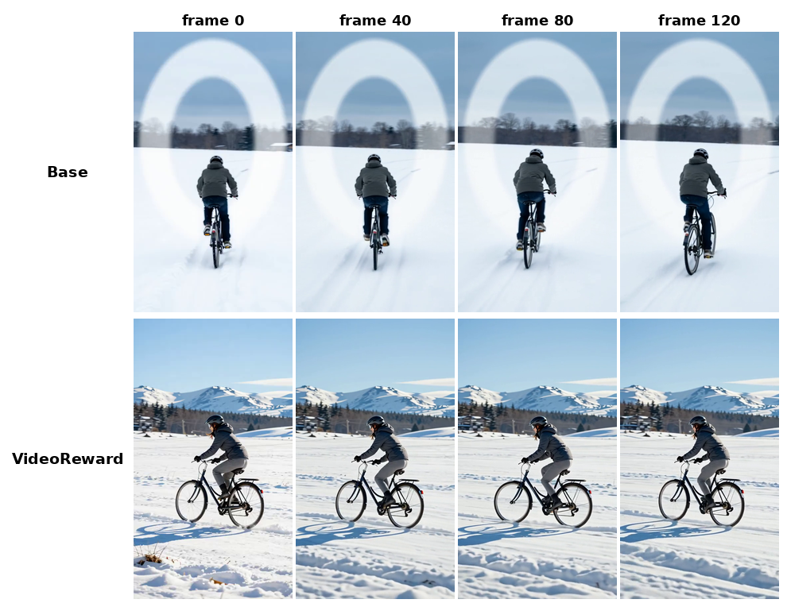
HunyuanVideo · dyn_027
The train advances forward along a straight set of rails, its driving wheels rotating continuously as it moves from the background toward the foreground. The locomotive maintains a steady forward trajectory, passing the camera position while the lower chassis and wheel assemblies roll smoothly over the track joints. The wheels complete full rotations without pausing as the train travels straight ahead. After passing the camera, the train continues its forward motion, gradually receding into the distance while maintaining consistent speed. A slow horizontal pan tracks the train's path for the first two seconds, then the camera holds steady for the remaining duration.
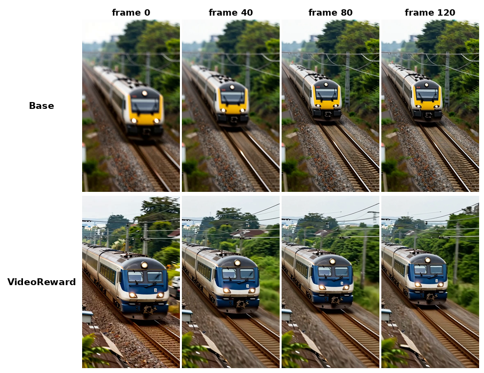
HunyuanVideo · dyn_032
The truck remains stationary in a dense line of vehicles. The front wheels turn slightly left and right, adjusting position twice. The front bumper dips downward as the suspension compresses, holds briefly, then returns to its original height. The exhaust pipe releases a short puff of vapor that drifts upward and dissipates. The side mirrors remain stationary throughout the sequence.
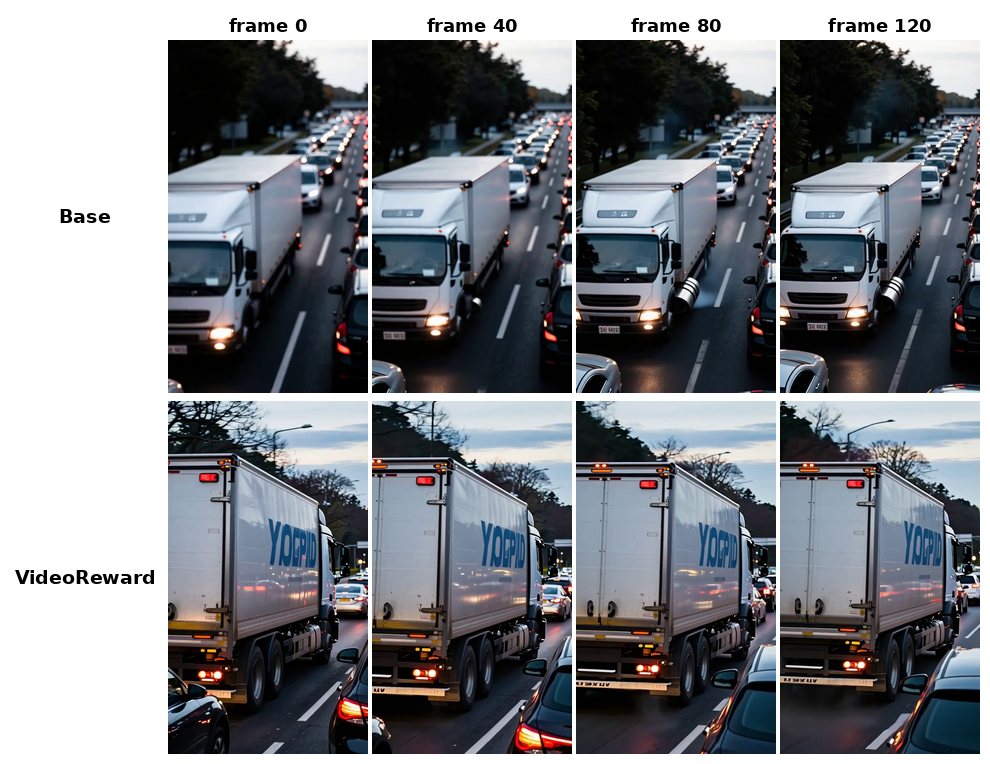
HunyuanVideo · dyn_033
The truck travels forward along a straight road surface, then gradually decelerates as the wheels rotate more slowly. The chassis settles downward slightly while the vehicle continues braking in a straight line, eventually coming to a complete halt with all wheels ceasing rotation. The truck holds the stationary position for the remainder of the shot. The camera remains fixed on the front three-quarter view throughout the sequence.
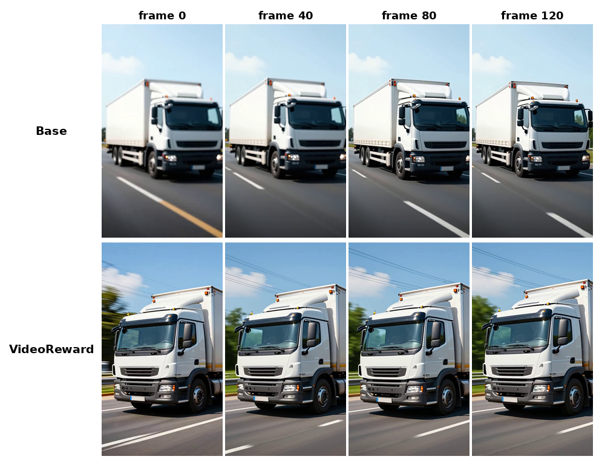
HunyuanVideo · dyn_070
A giraffe walks forward in a steady four-beat stride, lifting the front right leg and placing it down, followed by the front left, rear right, and rear left. Its long neck remains upright with a slight forward tilt, and its head turns slowly to the left, holds for a moment, then returns to face forward. The left ear twitches once, and the tail swishes in a single right-to-left arc. The giraffe takes two more steps forward, maintains a consistent pace, and comes to a brief stop with all four legs planted firmly on the ground.
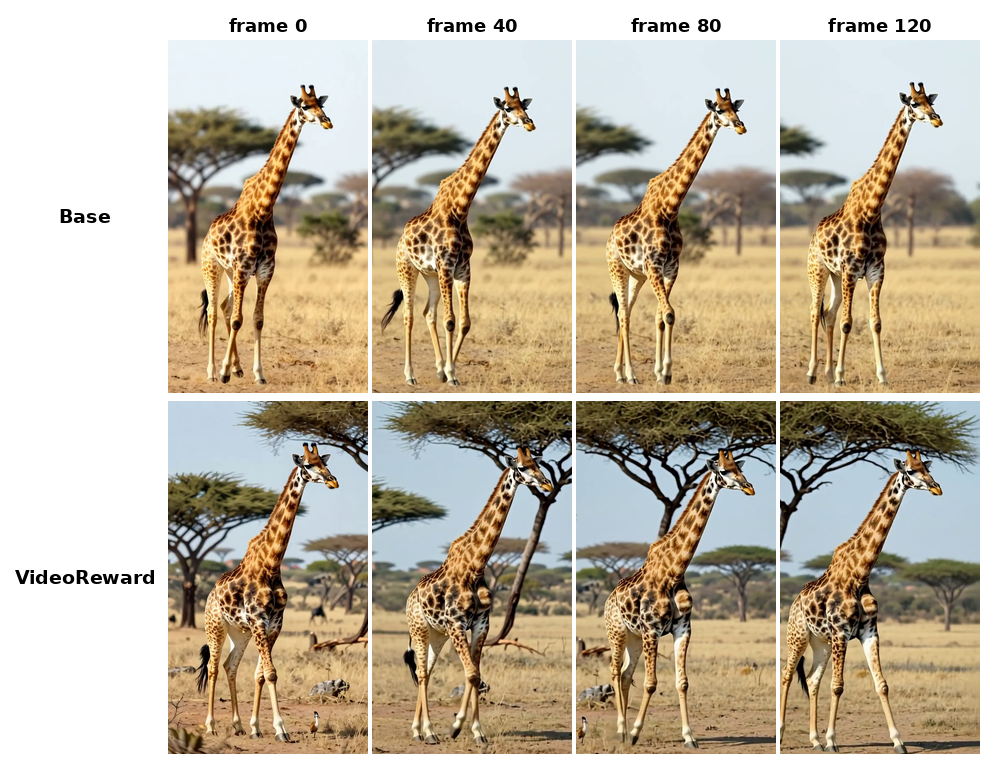
HunyuanVideo · dyn_071
A giraffe gallops forward across flat terrain, its long legs moving in a steady rhythm. The neck extends forward, swaying slightly with each stride, while the head bobs downward and lifts in sync with the hoof strikes. As it runs, the giraffe turns its head to the right, fixing its gaze on a group of three other giraffes standing in the distance. It maintains a consistent pace, ears flicking forward, and gradually closes the gap. Over the final two seconds, it reduces its stride length, brings its front legs to a firm plant, and straightens its neck into a standing position beside the herd.